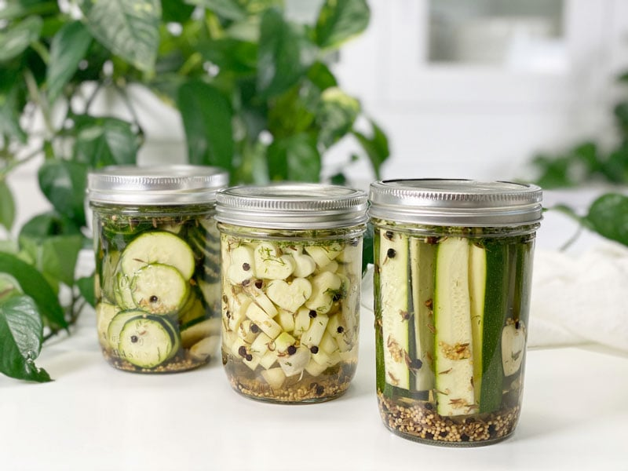

Savory Refrigerator Zucchini Pickles | No Canning
If you have never tried making pickles with zucchini before, you are in for a treat! Unlike a cucumber pickle, the zucchini’s sponge-like texture soaks up all of the flavors of the garlic, vinegar, and spices…plus they are super easy to make. There is no cooking or canning involved–it literally takes minutes. I think I might enjoy these over the everyday pickle! They have more structure and really soak in the flavor!

Once these pickles are refrigerated, you can enjoy them within 24 hours, but until then you must channel some patience.
Pickle Tips (say that 10x real fast)
- When filling the jar with water, be sure that all of the zucchini is covered.
- Don’t be afraid to crowd the jar with zucchini spears, as they will shrink a bit once they sit in the brine.
- It’s important to use coarse sea salt or kosher salt that does not contain iodine. Iodized salt can discolor your pickles and result in a cloudy brine.
- This recipe is strictly intended to be a refrigerator pickle recipe. The pickles must be kept refrigerated and will stay fresh and tasty for 2 weeks or more.
- If you don’t have any fresh dill on hand, increase the dill seed to 1/2 teaspoon per jar.
- Instead of distilled white vinegar, you can use raw apple cider vinegar, which has better health benefits. Just be aware that it will affect the color of the brine and pickles.
- How many of you are still saying “pickle tips” while reading this?
I listed out the spice ingredients in single-jar measurements, so you can make as many as you need without figuring out the math. I found that adding the spices to each jar ensured an even distribution. If you combine them all together in the brine and pour it into the jars, the flavors won’t be as balanced.
Kids’ Corner
If you have little ones, I encourage you to get them involved in making these pickles. Select some cookie cutters that fit within the diameter of the zucchini and have them make some fun-shaped pickles. If you have fun with this, don’t worry about waste. Use the leftover scraps in your next salad or soup. You can even save the end pieces. Place them in a ziplock back and pop in the freezer. Anytime you have any leftover veggie scraps, toss them into the same bag. Once you have about 4 cups on hand, simmer them in water to create a vegetable broth.
I hope you have fun with this recipe! Please leave a comment below, and if you are part of the private Facebook group, pop on over and share a photo of your little ones making fun-shaped pickled! blessings, amie sue
 Ingredients
Ingredients
Yields 4 pint-sized jars
Pickles
- 1 1/2 pounds zucchini (3 to 4 medium-sized zucchini)
Seasoning Per Jar
- 2 garlic cloves, peeled and halved
- 1/2 tsp black peppercorns
- 1/2 tsp mustard seeds
- 1/4 tsp caraway seeds
- 1/2 tsp dried dill
The Brine
- 2 1/2 cups hot water (to dissolve the salt)
- 1 cup distilled white vinegar or raw apple cider vinegar
- 2 Tbsp coarse sea salt or kosher salt
Preparation
Brine
- Combine the hot water, vinegar, and salt in a pourable container. Set aside.
- The hot water will help dissolve the salt.
Pickle Prep & Assembly
-
Wash the zucchini; trim the ends off and set aside (read above on what to do with the ends).
-
Slice into chips or spears, or cookie-cutter shapes as desired. Set aside.
-
Add the seasonings into the base of each pint-sized mason jar.
-
Fill with the cut zucchini.
-
Pour the brine into the jars over the zucchini, leaving about 1/2″ of headspace. Tightly secure lids and gently shake the jars.
-
Refrigerate for 24 hours or more before eating.
-
These pickles will keep refrigerated for 2 to 3 weeks.
-
Make sure to label and date each jar. It’s easy to lose track of time.
© AmieSue.com